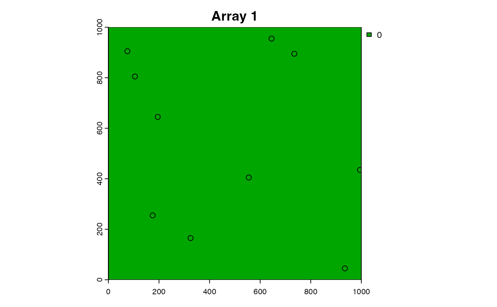
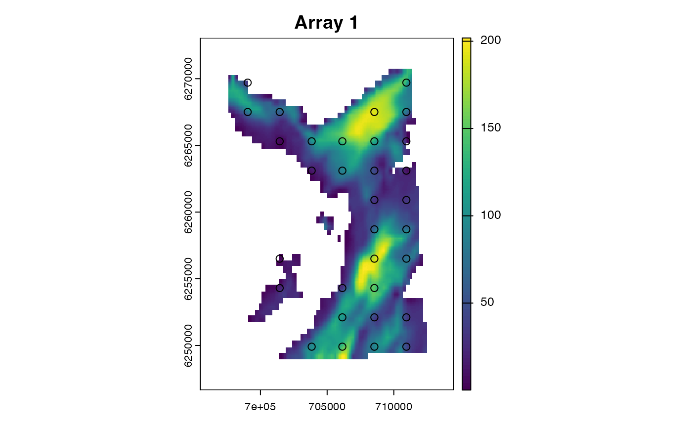
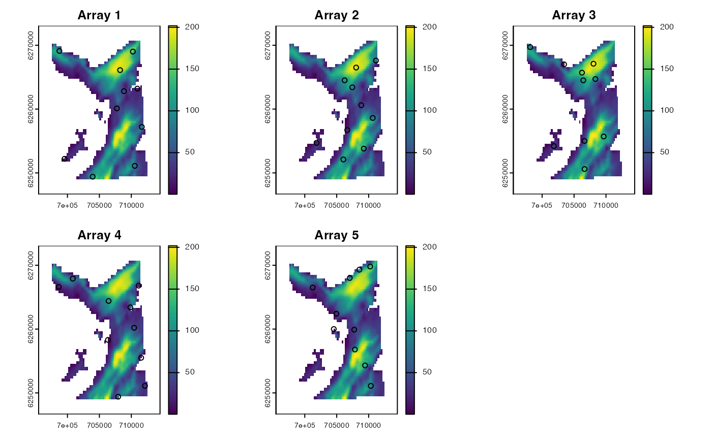
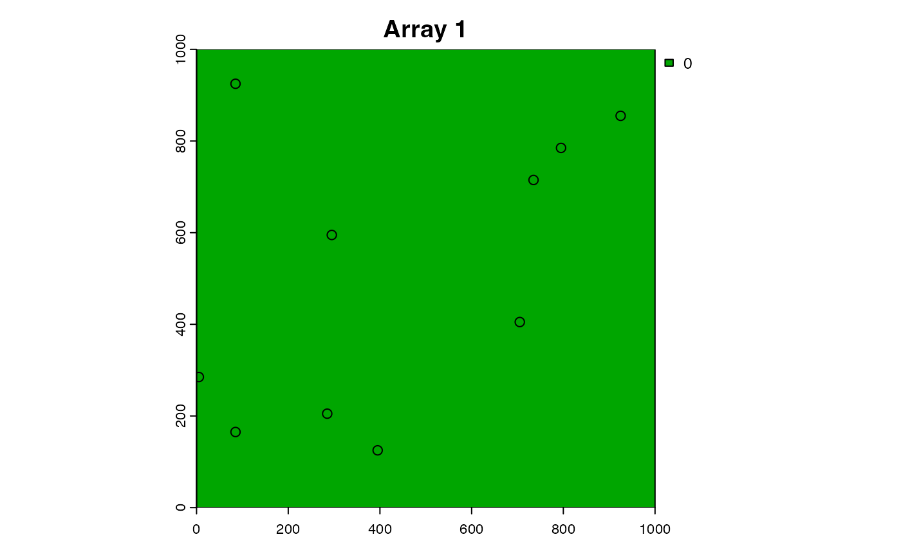
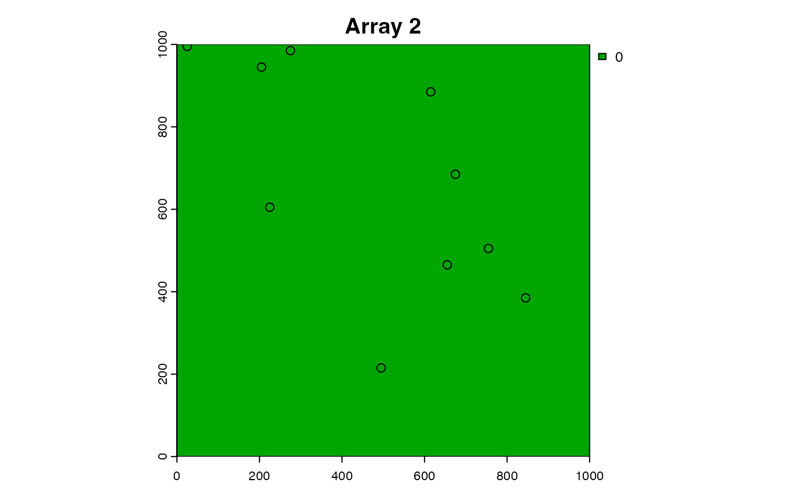
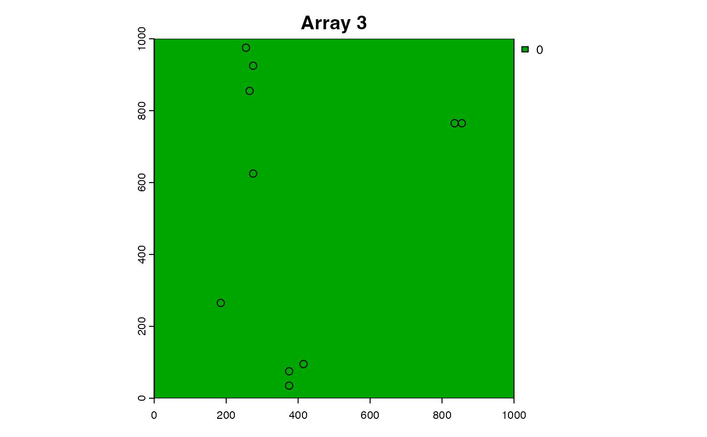
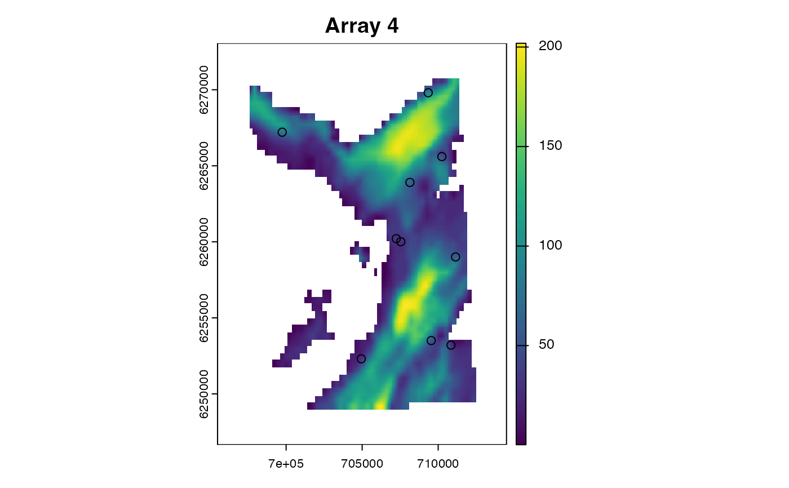
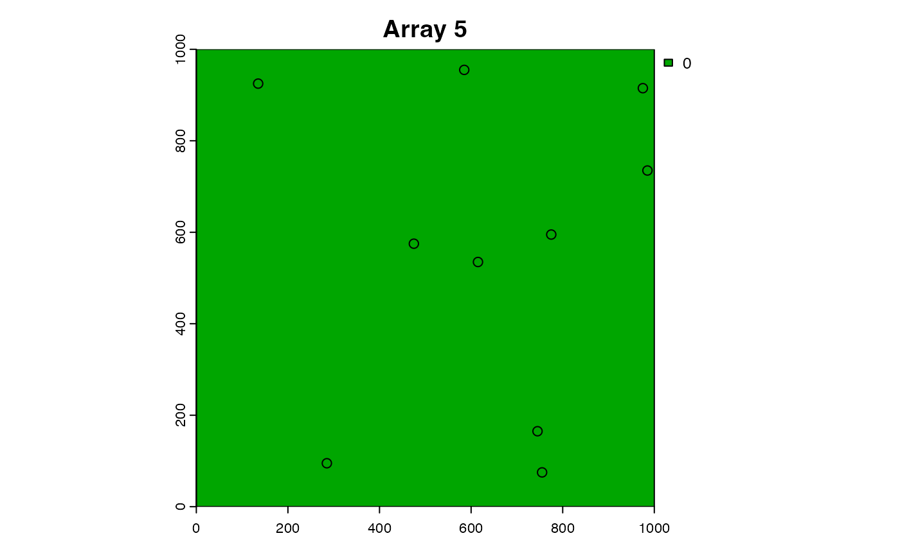

This function simulates acoustic arrays (i.e., networks of acoustic receiver(s)) on a grid.
sim_array(
.bathy = spatTemplate(),
.lonlat = FALSE,
.arrangement = "random",
.n_receiver = 10L,
...,
.receiver_start = NULL,
.receiver_end = NULL,
.receiver_range = NULL,
.n_array = 1L,
.plot = TRUE,
.one_page = FALSE
)A SpatRaster that defines the region of interest. Receivers are not simulated in NA regions.
A logical variable that defines whether or not coordinates on .bathy are in longitudes/latitude or planar format. This input controls the output name of the coordinate columns (see Value).
Arguments passed to terra::spatSample().
.arrangement is a character that defines the receiver arrangement (passed to the method argument).
.n_receiver is an integer that defines the number of receivers to simulate (passed to the size argument).
... ... Additional arguments.
(optional) Additional columns to include in the output:
.receiver_start and .receiver_end are Date or POSIXct inputs that specify the deployment time period;
.receiver_range is a numeric input that defines the detection range;
Single inputs are expected to these arguments, which are constant across all receivers.
An integer that defines the number of array designs to simulate with the aforementioned parameters.
A logical variable that defines whether or not to plot simulated arrays.
If .plot = TRUE, .one_page is a logical variable that defines whether or not to produce plots on a single page.
The function returns a data.table with the following columns:
array_id---an integer vector of array IDs,
receiver_id---an integer vector of receiver IDs;
receiver_easting (if .lonlat = FALSE) or receiver_lon (if .lonlat = TRUE)---a numeric vector that defines receiver x coordinates;
receiver_northing (if .lonlat = FALSE) or receiver_lat (if .lonlat = TRUE)---a numeric vector that defines receiver y coordinates;
receiver_start---receiver start dates (if defined);
receiver_end---receiver end dates (if defined);
receiver_range---receiver detection ranges (if defined);
Receiver locations are simulated using terra::spatSample().
sim_* functions implement de novo simulation of movements and observations:
sim_helpers are convenience functions for simulations;
sim_array() simulates acoustic array(s);
sim_path_walk() simulates movement path(s) via a walk model;
sim_detections() simulates detection(s) at receivers;
pf_forward() implements forward simulation-based reconstruction of movement paths;
pf_backward_sampler() implements backward simulation-based reconstruction of movement paths;
skill functions compared simulated and reconstructed patterns to evaluate model skill;
#### Example (1): The default implementation
# The function returns a data.table
a <- sim_array()

a
#> array_id receiver_id receiver_easting receiver_northing
#> 1: 1 1 555 405
#> 2: 1 2 75 905
#> 3: 1 3 175 255
#> 4: 1 4 195 645
#> 5: 1 5 935 45
#> 6: 1 6 325 165
#> 7: 1 7 735 895
#> 8: 1 8 995 435
#> 9: 1 9 105 805
#> 10: 1 10 645 955
#### Example (2): Customise receiver placement/number
a <- sim_array(.arrangement = "regular", .n_receiver = 100)

#### Example (3): Add additional columns for downstream functions
a <- sim_array(.receiver_start = as.Date("2013-01-01"),
.receiver_end = as.Date("2014-01-01"),
.receiver_range = 750)
#### Example (4): Control the plot(s)
sim_array(.plot = FALSE)
#> array_id receiver_id receiver_easting receiver_northing
#> 1: 1 1 455 365
#> 2: 1 2 235 655
#> 3: 1 3 605 215
#> 4: 1 4 785 465
#> 5: 1 5 725 735
#> 6: 1 6 565 685
#> 7: 1 7 585 425
#> 8: 1 8 55 475
#> 9: 1 9 25 425
#> 10: 1 10 475 905
sim_array(.n_array = 5L, .plot = TRUE, .one_page = TRUE)

#> array_id receiver_id receiver_easting receiver_northing
#> 1: 1 1 635 95
#> 2: 1 2 915 25
#> 3: 1 3 455 755
#> 4: 1 4 525 325
#> 5: 1 5 825 575
#> 6: 1 6 175 465
#> 7: 1 7 165 895
#> 8: 1 8 45 75
#> 9: 1 9 525 215
#> 10: 1 10 665 375
#> 11: 2 1 695 435
#> 12: 2 2 105 335
#> 13: 2 3 765 775
#> 14: 2 4 645 225
#> 15: 2 5 695 115
#> 16: 2 6 855 15
#> 17: 2 7 205 45
#> 18: 2 8 975 535
#> 19: 2 9 325 135
#> 20: 2 10 165 555
#> 21: 3 1 375 65
#> 22: 3 2 555 185
#> 23: 3 3 575 225
#> 24: 3 4 315 595
#> 25: 3 5 195 225
#> 26: 3 6 205 885
#> 27: 3 7 935 5
#> 28: 3 8 475 345
#> 29: 3 9 425 625
#> 30: 3 10 195 585
#> 31: 4 1 175 815
#> 32: 4 2 245 695
#> 33: 4 3 195 745
#> 34: 4 4 955 195
#> 35: 4 5 545 205
#> 36: 4 6 785 645
#> 37: 4 7 875 665
#> 38: 4 8 245 45
#> 39: 4 9 385 65
#> 40: 4 10 115 835
#> 41: 5 1 675 875
#> 42: 5 2 955 135
#> 43: 5 3 355 825
#> 44: 5 4 685 565
#> 45: 5 5 665 295
#> 46: 5 6 385 145
#> 47: 5 7 395 125
#> 48: 5 8 965 615
#> 49: 5 9 665 15
#> 50: 5 10 375 405
#> array_id receiver_id receiver_easting receiver_northing
sim_array(.n_array = 5L, .plot = TRUE, .one_page = FALSE)





#> array_id receiver_id receiver_easting receiver_northing
#> 1: 1 1 545 905
#> 2: 1 2 485 645
#> 3: 1 3 965 685
#> 4: 1 4 725 155
#> 5: 1 5 735 315
#> 6: 1 6 685 655
#> 7: 1 7 435 575
#> 8: 1 8 125 705
#> 9: 1 9 215 945
#> 10: 1 10 485 525
#> 11: 2 1 45 165
#> 12: 2 2 785 225
#> 13: 2 3 455 485
#> 14: 2 4 825 695
#> 15: 2 5 375 945
#> 16: 2 6 805 795
#> 17: 2 7 915 655
#> 18: 2 8 995 785
#> 19: 2 9 5 785
#> 20: 2 10 125 125
#> 21: 3 1 145 295
#> 22: 3 2 185 715
#> 23: 3 3 865 665
#> 24: 3 4 405 805
#> 25: 3 5 885 795
#> 26: 3 6 985 695
#> 27: 3 7 785 655
#> 28: 3 8 425 825
#> 29: 3 9 65 575
#> 30: 3 10 945 755
#> 31: 4 1 165 825
#> 32: 4 2 545 295
#> 33: 4 3 935 375
#> 34: 4 4 875 475
#> 35: 4 5 715 705
#> 36: 4 6 985 215
#> 37: 4 7 705 245
#> 38: 4 8 605 165
#> 39: 4 9 455 155
#> 40: 4 10 565 775
#> 41: 5 1 165 875
#> 42: 5 2 425 365
#> 43: 5 3 895 465
#> 44: 5 4 285 95
#> 45: 5 5 275 255
#> 46: 5 6 515 485
#> 47: 5 7 25 795
#> 48: 5 8 805 375
#> 49: 5 9 555 475
#> 50: 5 10 565 425
#> array_id receiver_id receiver_easting receiver_northing